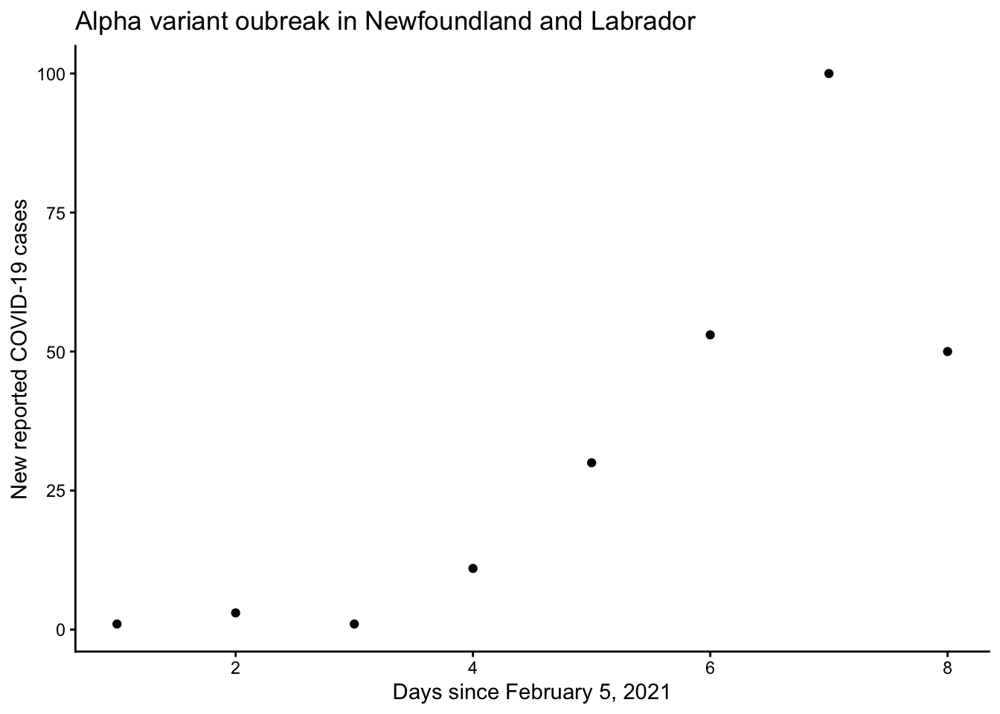
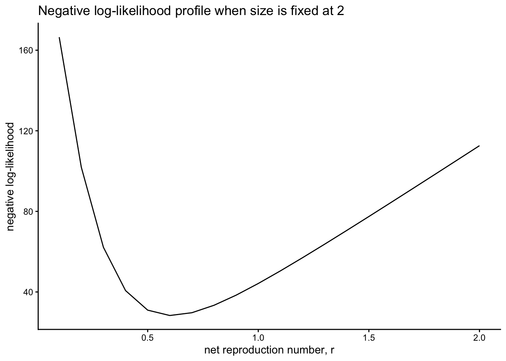
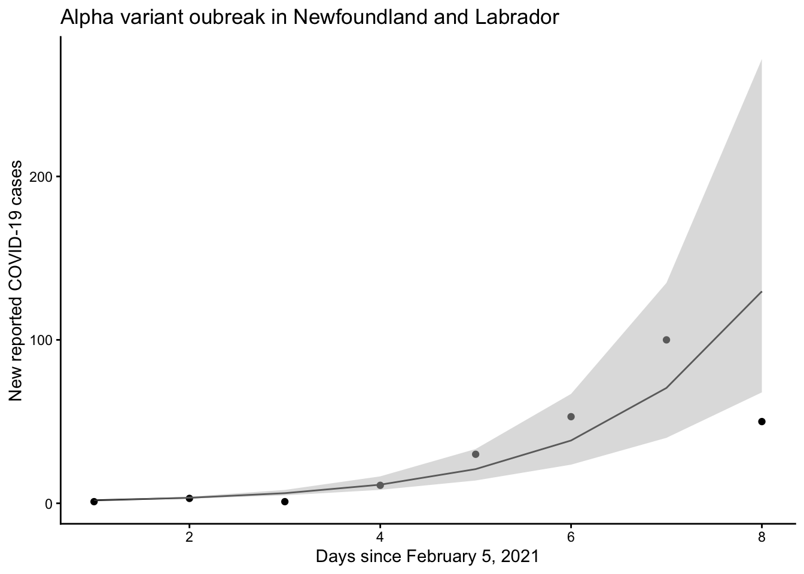

21 Wed Oct 28 - Parameter estimation using maximum likelihood estimation
21.1 Assignment 4
Assignment 4 (link) is due on Friday Nov 6 on gradescope. I have also added links to Assignment 3 (in case it was difficult to find the generic recipe). Please submit Assignment 3 as soon as possible.
We have mentioned previously in class that taking the logarithm of the response variable is not desirable and that maximum likelihood parameter estimation (MLE) is an alternative in these situations.
For a model of exponential growth, i.e., such as the increase in the number of COVID-19 cases at the start of the outbreak, historically, the logarithm of the response variable for the model has been applied so that the relationship between the predictor variables and the response variables are linear. Specifically, the exponential growth model is,
\[ N_t = N_0 e^{rt} \]
where \(N_t\) (units: number) is the size of the population at time \(t\), \(N_0\) is the initial population size (units: number), \(r\) is the net reproduction number (units: days\(^{-1}\)) and \(t\) is time in days relative to a reference date (i.e., when the population size was \(N_0\)). Exponential growth is a good model for population biology when population sizes are small (and this includes populations of infected people, such as the application to infectious diseases).
We can take the logarithm of both sizes of this non-linear model to make the relationship betwen the logarithm of the response variable and the predictor variables be linear. Specifically,
\[\begin{equation} \begin{array}{ccc} \ln(N_t) & = & \ln(N_0) + \ln(e^{rt}), \\ \ln\left(\dfrac{N_t}{N_0}\right) &=& rt. \\ \end{array} \end{equation}\]
Given this transformation, we choose \(\ln\left(\dfrac{N_t}{N_0}\right)\) as our response variable (where \(N_0\), the initial population size has a known value) and then if we forced the regression intercept to 0, the slope of the regression, with \(t\) as the explanatory variable, is \(r\). We could implement such a regression to estimate \(r\), the net reproduction number of the population, but in taking the logarithm of both sides we have changed our assumptions about the residuals being normally distributed. In doing this transformation, now the residuals around \(\ln\left(\dfrac{N_t}{N_0}\right)\) are normally distributed, and relative to a response variable of \(N_t\) our estimate of \(r\) might be inaccurate.
To avoid transforming our response variable we can fit the non-linear model using maximum likelihood.
21.2 Write the model
We wish to estimate the doubling time for SARS-CoV-2 for the model,
\[ N_t = N_0 e^{rt}, \]
where the doubling time is calculated as \(t_D = \ln(2)/r\). Therefore, to calculate the doubling time, we need to estimate \(r\) in the exponential growth model.
Consider our data, which is the number of reported COVID-19 cases in Newfoundland and Labrador from February 5, 2021 to February 12, 2021.
require(dplyr)
# This code involves a bit of data cleaning, but at the end our data is printed.
COVID.data = read.csv("https://raw.githubusercontent.com/ahurford/NL-public-COVID-data/main/NL_prov_stats.csv")
dates <- COVID.data$date_of_update
COVID.data$date_of_update <- format(as.POSIXct(dates,format='%Y/%m/%d %H:%M:%S'),format='%Y/%m/%d')
COVID.data = filter(COVID.data,date_of_update >= "2021/02/05")%>%filter(date_of_update <= "2021/02/12")%>%select(date_of_update, new_provincial_cases)
date = seq(as.Date("2021/02/05"), as.Date("2021/02/12"), "days")
COVID.data <- data.frame(COVID.data, date)%>%mutate(t = seq(1,8))%>%rename(cases=new_provincial_cases)%>%select(-date_of_update)
COVID.data## cases date t
## 1 1 2021-02-05 1
## 2 3 2021-02-06 2
## 3 1 2021-02-07 3
## 4 11 2021-02-08 4
## 5 30 2021-02-09 5
## 6 53 2021-02-10 6
## 7 100 2021-02-11 7
## 8 50 2021-02-12 8Let’s graph our COVID-19 data to inspect whether fitting an exponential growth model to these data is reasonable.
require(ggplot2)
g1=ggplot(COVID.data, aes(x = t, y = cases)) +
geom_point()+xlab("Days since February 5, 2021")+ylab("New reported COVID-19 cases")+theme_classic()+ggtitle("Alpha variant oubreak in Newfoundland and Labrador")
g1
There is quite a bit of error deviation from exponential, likely due to undetected cases and reporting delays. Nonetheless, we will complete our analysis as a starting point. We will also assume that \(N_0 = 1\).
21.3 Writing the likelihood function
Likelihood. Given the data, how likely is a parameter in the model. Can be contrasted with probability, where if the parameters are known, we can calculate the probability of an outcome.
The likelihood function is,
\[ L(\theta | y_1, y_2, \dots, y_n) = \prod_{i=1}^n p(y_i, n(t_i, \theta|\theta)). \]
and the log-likelihood is,
\[\begin{equation} \begin{array}{lll} LL(\theta | y_1, y_2, \dots, y_n) & = & \log\left(\prod_{i=1}^n p(y_i, n(t_i, \theta|\theta))\right),\\ & = & \sum_{i=1}^n \log\left(p(y_i, n(t_i, \theta|\theta))\right), \end{array} \end{equation}\]
where,
\(y_1, y_2, \dots, y_n\): are the observations reported for the response variable.
\(n(t_i, \theta)\) is the expected value of the response variable for the explanatory variable value that corresponds to observation \(i\), \(t_i\), and \(\theta\) is a parameter (or a vector of parameters) in the model.
\(p(y_i, n(t_i,\theta)|\theta)\) is the probability of the observation \(y_i\) given the parameter choice of \(\theta\).
\(L(\theta | y_1, y_2, \dots, y_n)\) is the likelihood of \(\theta\) given the data.
To write the likelihood function we need to make an assumption about the distribution of our residuals.
For this COVID-19 case data, the numbers are small, so we might choose the Poisson distribution. The Poisson distribution only has one parameter (the mean), so fitting this model involves one less complication than assuming normally distributed errors, where the normal distribution has both a mean and a variance parameter. Therefore, I will complete this example assuming a negative binomial distribution of errors; to account for the small values and to show an example of fitting two parameters.
I am going to complete my model fitting using the mle2 function from the bbmle package.
Using this function requires me to create a function that returns the negative log-likelihood. This function depends on two parameters that I wish to estimate, \(r\) and the overdispersion parameter in the negative binomial, which is size.
N0 <- 1 # fix N0 = 1
nLL = function(r,size){
nLLi=NULL #preallocation
for(i in seq(1,length(COVID.data$t))){
t=COVID.data$t[i]
Nt=COVID.data$cases[i]
mu = N0*exp(r*t) # the model-predicted value for time, t.
nLLi[i] = -log(dnbinom(Nt,mu = mu,size=size)) # this is the negative log-likelihood for the observation made at time t, given the model, for a particular choice of r, and the overdispersion.
}
nLL = sum(nLLi)
}I can check my function supplying some values of r and size.
## [1] 44.2078221.4 Fit the model
Before I fit the model, I would like to check my negative log-likelihood function some more.
I can fix size and make a plot of the negative log-likelihood:
r.vals = seq(0.1,2,0.1)
nLL.out <- NULL #preallocation
for(i in seq(1,length(r.vals))){
r = r.vals[i]
nLL.out[i] = nLL(r,size=2)
}
nLL.out = data.frame(r=r.vals, nLL = nLL.out)
nLL.out## r nLL
## 1 0.1 166.46890
## 2 0.2 101.91043
## 3 0.3 62.15926
## 4 0.4 40.68094
## 5 0.5 30.98082
## 6 0.6 28.31345
## 7 0.7 29.69811
## 8 0.8 33.39383
## 9 0.9 38.41487
## 10 1.0 44.20782
## 11 1.1 50.46069
## 12 1.2 56.99544
## 13 1.3 63.70869
## 14 1.4 70.53907
## 15 1.5 77.44921
## 16 1.6 84.41572
## 17 1.7 91.42348
## 18 1.8 98.46241
## 19 1.9 105.52558
## 20 2.0 112.60807We can plot these results:
gnLL=ggplot(nLL.out, aes(x = r, y = nLL)) +
geom_line()+xlab("net reproduction number, r")+ylab("negative log-likelihood")+theme_classic()+ggtitle("Negative log-likelihood profile when size is fixed at 2")
gnLL
From this graph we can see that when the dispersion parameter in the negative binomial is fixed at 2, the negative log-likelihood is minimized for \(r \approx\) 0.6 days\(^{-1}\). This illustrates what were are aiming to do for the parameter estimation.
When we estimate the parameters using mle2 we will need to supply guesses of the \((r,1/k)\) parameter values (where the size parameter is denoted \(1/k\)) that minimize the negative log-likelihood.
Note that the likelihood is maximized for the same parameter values as the log-likelihood because the logarithm function is monotonic. Note also that the parameter that maximizes the log-likelihood, also minimizes the negative log-likelihood.
Let’s use the mle2 function to estimate our \(r\) and \(1/k\) for this model.
fit <- mle2(
minuslogl = nLL,
start = list(r = 0.6, size =2), # Initial parameter guesses
)
summary(fit)## Maximum likelihood estimation
##
## Call:
## mle2(minuslogl = nLL, start = list(r = 0.6, size = 2))
##
## Coefficients:
## Estimate Std. Error z value Pr(z)
## r 0.60813 0.03745 16.2384 <2e-16 ***
## size 3.99971 2.63948 1.5153 0.1297
## ---
## Signif. codes: 0 '***' 0.001 '**' 0.01 '*' 0.05 '.' 0.1 ' ' 1
##
## -2 log L: 55.57756## 2.5 % 97.5 %
## r 0.5271991 0.7006337
## size 0.9274826 13.1798957There is some risk with maximum likelihood of failure to converge or convergence to a local minimum. Therefore we should plot our estimates and our 95\(\%\) confidence interval.
r.est = 0.60813
r.lower = 0.5271991
r.upper = 0.7006337
fitted.values = data.frame(t = COVID.data$t, mean = N0*exp(r.est*COVID.data$t), lower = N0*exp(r.lower*COVID.data$t), upper = N0*exp(r.upper*COVID.data$t))g2 = g1+geom_line(data = fitted.values, aes(x = t, y = mean))+geom_ribbon(data=fitted.values, aes(x=t,ymin = lower, ymax=upper,y=NULL), fill="grey", alpha=0.5)
g2
This has added the fitted estimate of \(\hat{r} = 0.60813\) days\(^{-1}\) to compare with the data. The shaded region is the 95\(\%\) confidence interval. The original data are the first layer of the ggplot.
To answer the question of what is the doubling time for COVID-19 cases in this situation, we use the formula \(t_D = \ln(2)/0.608 = 1.14\) days. This means that if this pattern of growth in COVID-19 cases continues, we expect the number of cases to double after a little more than one day. Our 95\(\%\) confidence interval for this estimate is: \([0.99,1.31]\) days.
21.5 Conclusion
My hope is that this code might be useful for you if you want to fit nonlinear models or non-normal error distributions. The theory of maximum likelihood is explained in Burnham and Anderson, 2004.
Burnham and Anderson (2004) also explains how to select between different models, i.e., for example, this exponential model and the Susceptible-Infected-Recovered model, for example.